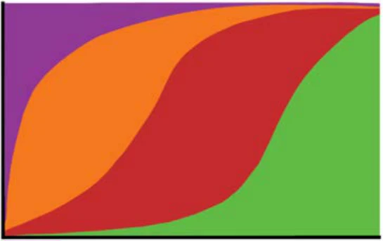
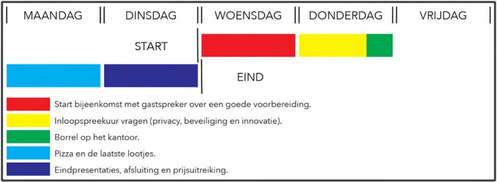

07 / Organisational design
Redesigning Innovation
An organisational design project for the Justitiële Informatiedienst, exploring how its innovation week could better support ideas from initial exploration to implementation.

Finding the underlying problem
Justid, part of the Dutch Ministry of Justice and Security, experienced a limited number of experiment proposals for its innovation week. Our analysis identified gaps in shared knowledge about innovation processes and in employee motivation.

Making the process visible
Our team used the IDER model as a boundary object: a shared representation of initiation, design, engineering and realisation. Rather than treating these as isolated steps, the model makes their ongoing interplay visible and helps participants discuss an imbalanced process.
Supporting ideas beyond the week
The proposed process begins initiation before the innovation week, provides methods and guidance during design and engineering, and creates space for implementation afterwards. Supporting materials help employees enter the process. The result is a process recommendation and shared model, rather than a reported organisational transformation.